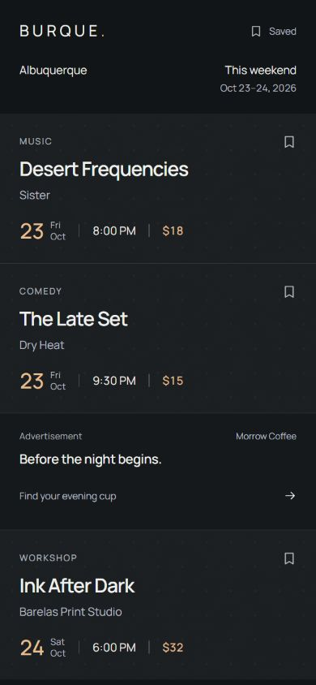
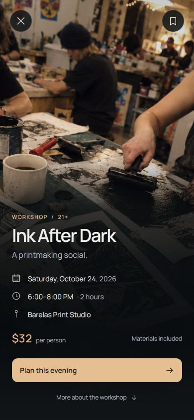
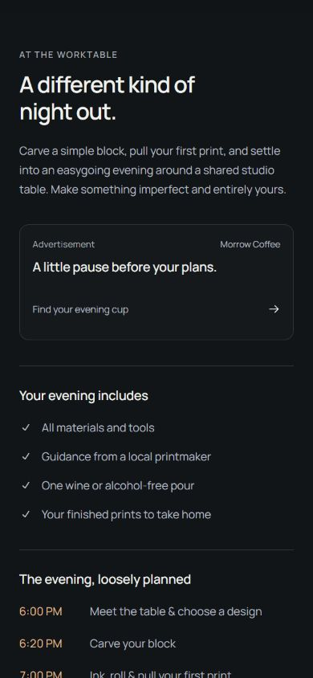
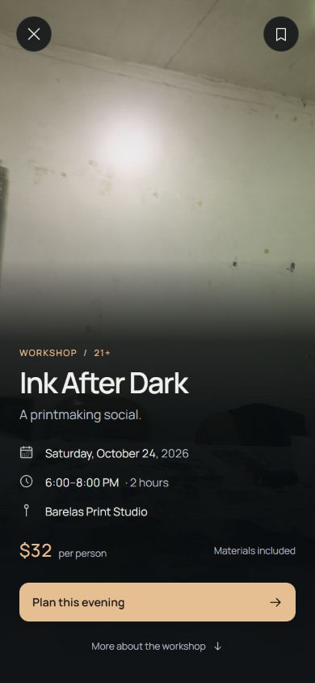

Date Line / Product readiness / 21 October 2026
Keep the visual design. Give it dependable behavior.
The approved Date Line and both practical studies remain unchanged. This review identifies the product states and small interactions that should surround the selected layout. Recommendations are proposed next work; they have not been added to the static prototype.
Scope: fresh browser captures at 390 × 844 of the current Local Partner list, event opening, event details and Rough Upload opening. User goal: discover a suitable local event, understand it, plan attendance and return without losing context.
What was inspected








The practical work to prioritize
| Need | What to account for | Fit with Date Line |
|---|---|---|
| Attend the event | Get tickets, RSVP, free walk-in or visit organizer. Show ticket destination, known fees and availability. Distinguish doors from start time. Include full address, directions, organizer/contact, age limits and factual access information. | Use the existing primary action. Put practical utilities and organizer information below the fold. Avoid publishing an unverified accessibility claim. |
| Event changes | Cancelled, postponed, rescheduled, sold out and ended. Recurring and multi-day events need clear occurrence dates and local timezone handling. Retain context for an existing shared link. | A compact text status appears only when relevant, with a matching explanation and action on the detail page. Cancellation must override ticket promotion. |
| Discovery | Date range, category, free/paid, neighborhood and search. Selected filters, clear all, result count, no matches and end of results. Keep a useful date default. | Start with a compact discovery control in the existing header. A sheet can contain the secondary choices. Keep ordinary cards unchanged. |
| Save and return | Saved/unsaved states, persistence, empty saved list, save failures, browser Back, deep links and refresh. Keep filters and scroll position on return. | Use the existing bookmark and Saved entry. Local saving can support the first release; sign-in becomes useful if cross-device sync is needed. |
| Imperfect content | No image, failed image, wide photo, poster with text, long title, long venue name, missing end time, free event and price range. Allow a focal point for uploaded photos. | Use the approved dark texture as the image fallback. Preserve typography and content order. Do not invent missing facts or turn every title into a fixed two-line crop. |
| Loading and recovery | First load, loading more, timeout, offline, retry, empty feed and deleted event. Keep already loaded results visible if a later fetch fails. | Reserve image and ad space to avoid page jumps. Use quiet static placeholders and local retry controls. Failed advertisements should not block events. |
| User submissions | Required fields, field errors, upload progress/failure, preview, draft, pending review, published and edit/cancel. Someone needs responsibility for duplicate reports, spam and stale listings. | This is a separate organizer flow. A small Report incorrect details link belongs below event details. Show a factual source or update time when useful. |
| Shared event pages | Stable URL for every event, native sharing with copy-link fallback, calendar export, useful link preview and event structured data kept in sync with visible facts. | Place Share, Add to calendar and Directions together below the opening. A shared link should work without visiting the feed first. |
Microinteractions worth the attention
- Open and return as one continuous journey. Carry the event title or date from its card into the full-screen view; reveal the photo alongside it. Return to the same card, filters and scroll position, with sensible keyboard focus. Use ordinary navigation when View Transitions are unavailable.
- Make saving unmistakable. Immediate filled-bookmark state and a short “Saved” confirmation. A removal can offer Undo. If persistence fails, restore the previous state and explain the failure. Saving must not also open the event.
- Give every tap a quiet response. A small surface or foreground change on press, visible keyboard focus, and generous invisible hit areas around small icons. Keep the touching cards visually stable.
- Make filter changes legible. Show active choices and the new result count. Update smoothly while keeping the controls stable. No matches should offer a direct way to widen the date or clear filters.
- Confirm completed actions honestly. “Link copied” only after a successful copy. Cancelling a share sheet is ordinary behavior. Label calendar actions as adding or downloading an event; do not claim a calendar entry was saved when that cannot be verified.
- Let loading settle quietly. Keep image space and controls in place as an image appears. A failed image should resolve to the approved texture without a layout jump. Use a calm placeholder rather than an endlessly animated shimmer.
Proposed starting motion tokens: 100–150 ms for press/save feedback and roughly 220–280 ms for navigation. These are design choices to test on a phone, not standards. Honor reduced-motion preferences and ensure navigation remains usable with motion disabled. Announce relevant feedback to assistive technology without moving focus.
The next three focused studies
- Save, open, return. Demonstrate saved state, brief confirmation, correct Back behavior and the same list position. This is the smallest interaction slice with the most immediate payoff.
- Plans changed. Show the same event as sold out, rescheduled and cancelled, including the correct action and explanatory text.
- Information or connection missing. Show no photo, long content, no filter matches and a recoverable network failure.
Keep each study separate from the approved baseline. Static HTML can show these state designs; a small isolated interactive demonstration is needed to judge timing, persistence and return behavior. Event reviews, social feeds and notification systems can wait until there is a clear user need.
Accessibility and evidence limits
The inspected views visibly maintain clear hierarchy and readable text over both sample photos. This run does not establish WCAG conformance. It did not test a screen reader, text enlargement, every image/background combination, live save requests, actual ticketing, real offline behavior or motion on a physical phone. Verify keyboard focus, focus return, accessible bookmark state, status announcements, reduced motion and responsive text during implementation. Use text alongside color for important event states.
The present files are deliberately static design studies. Unimplemented saved/search/booking behavior is a scope limit, not a regression. Research below informs recommendations and is separate from the fresh screenshot evidence.
Primary references
- Google Search Central: event data and cancellation/rescheduling — supports preserving the event identity and updating its actual status. Search eligibility is not guaranteed.
- MDN: View Transition API — supports transitions between views and documents; use as a progressive enhancement.
- MDN: native sharing — device-dependent sharing, with a fallback needed when unavailable.
- W3C: status messages — relevant success, waiting and error feedback should be available to assistive technology.
- W3C: animation from interactions — supports allowing people to disable nonessential motion.
Reviewed using the Product Design audit workflow. Evidence files and per-step notes are stored beside this report in steps.json. No approved HTML/CSS, artwork or archive was altered.